вход в музей
Карта местности
Нажми на точки на карте, чтобы перейти к соответствующей локации.

Музей (Бабчины)
Панорама музея — перетаскивай или используй стрелки
🌐 3D Тур по музею
Открыть интерактивный 3D тур на официальном сайте заповедника
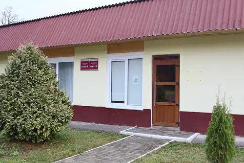
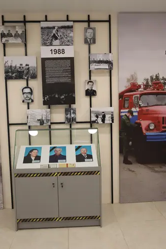
ветераны

герпетофауна
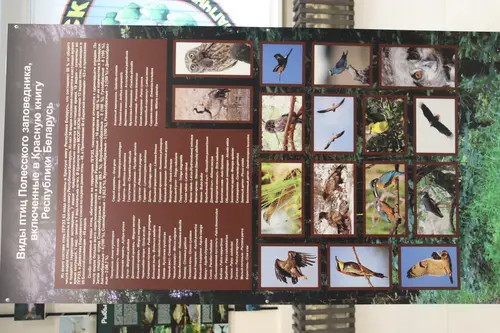
птицы
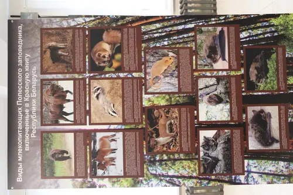
животные
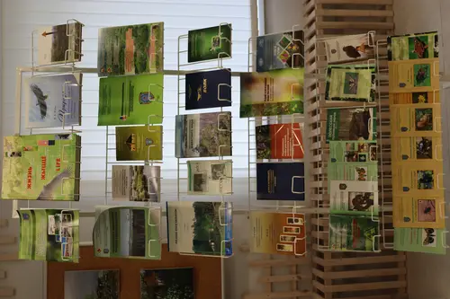
литература
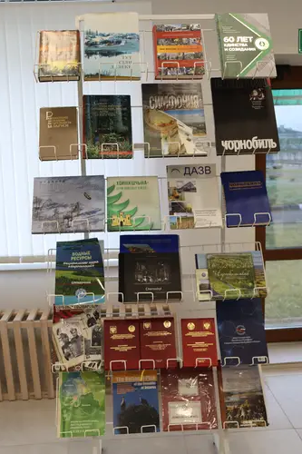
литература
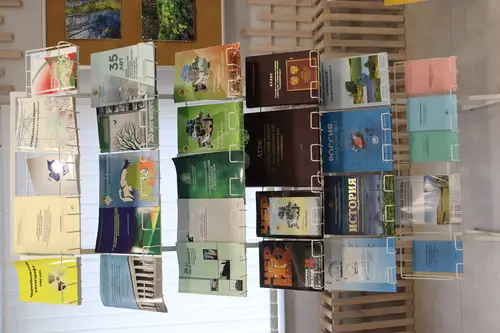
литература
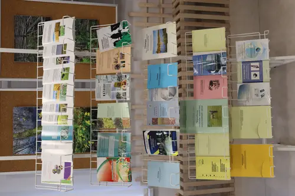
литература
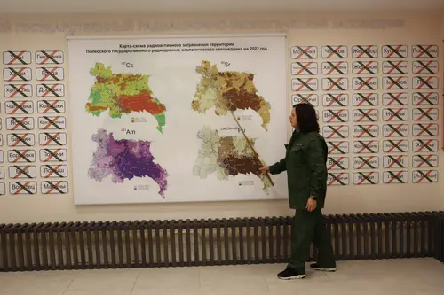
музей стенд
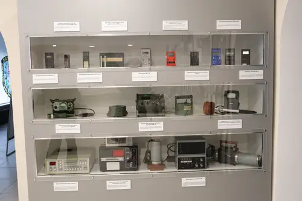
оборудование
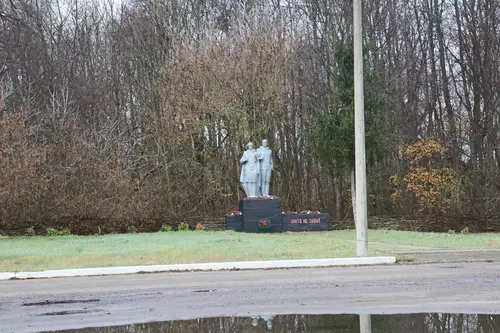
памятник
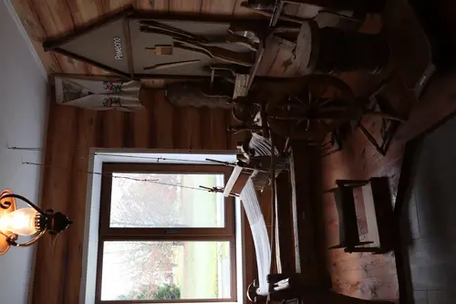
прылады працы
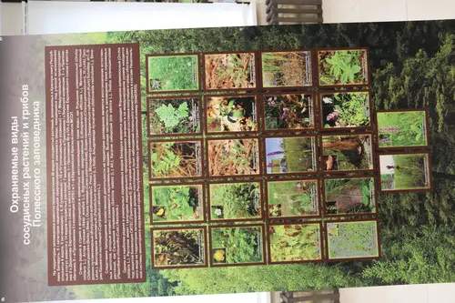
растения
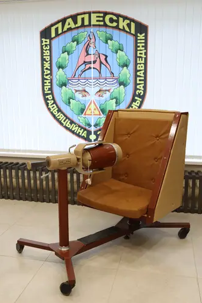
СИЧ
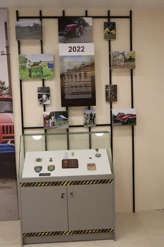
техника
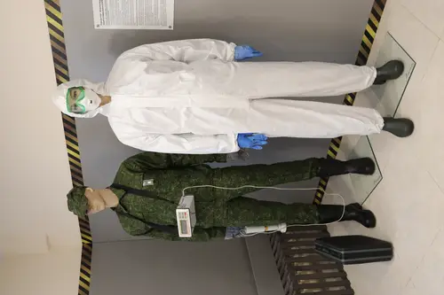
форма
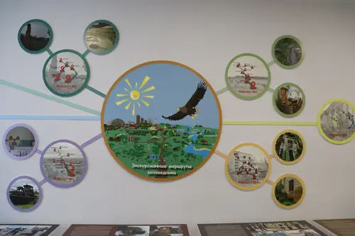
маршруты
старая газета
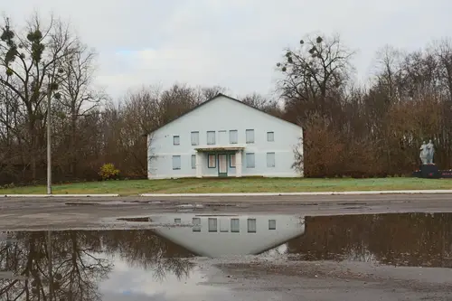
напротив музея
Дроньки
начальная школа
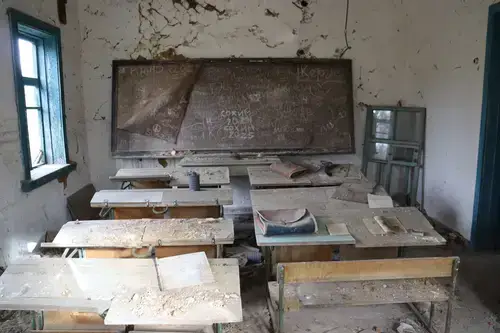
класс с доской
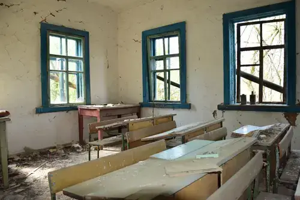
класс с доской
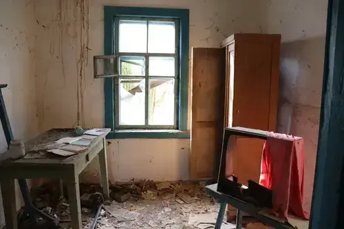
учительская
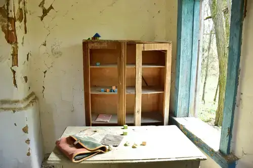
учительская
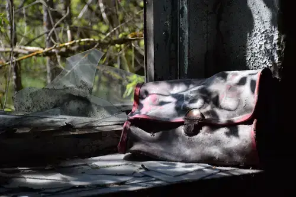
старая сумка
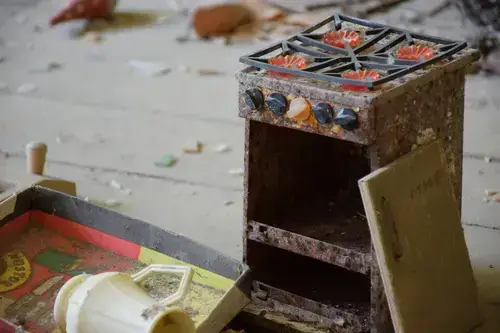
игрушка-плита
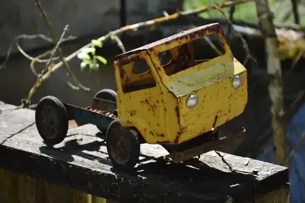
игрушка-машинка
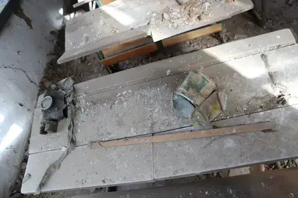
парта
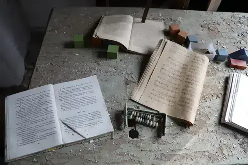
принадлежности
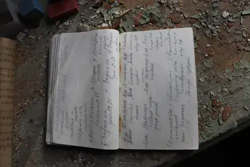
план урока
книга

интерес
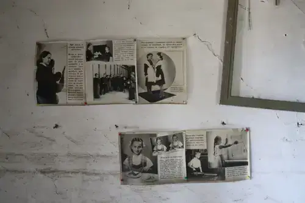
плакат
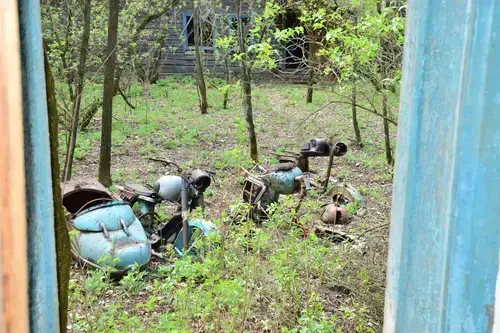
мотоциклы
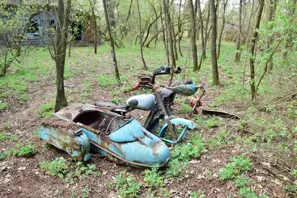
мотоциклы
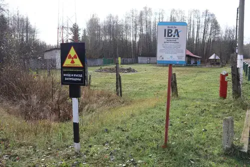
территория
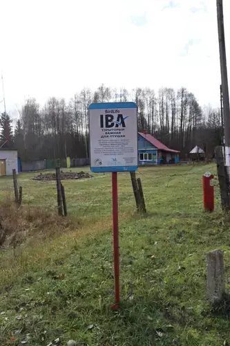
кпп
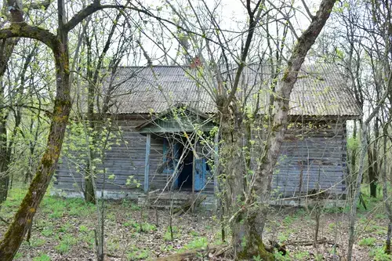
кпп
кабинет
мотоциклы на заднем дворе
Погонное

снаружи
1516–1526
первые документы о земле и Погонном
6 улиц
погонная планировка деревни
1053
жителя до аварии на ЧАЭС
май 1943
деревня сожжена, 13 жителей убиты
Первые упоминания (XVI век)
Самые ранние документы связывают Погонное с землями по Припяти. В «Литовской Метрике» есть лист короля Жигимонта от 14 (24) мая 1516 года, где говорится о даровании «землицы нагонной (пагонной)» — это ещё не было селением, а местом прогона и выпаса скота.
Памятная запись 1526 года и грамота 1543 года подтверждают владение этими землями Михайловским (Златоверхим) монастырём в Киеве и упоминают Погонное как уже значимое место.

дорога

клуб сверху
XVII век и уточнение времени возникновения
В привилегии короля Яна Собеского от 30 марта 1688 года деревня фигурирует как Подгонное (Podhonne) и передаётся во владение дворянину Стефану Криницкому. Это один из ключевых документов, по которому исследователи связывают возникновение села с началом–серединой XVII века.
В составе империи и развитие деревни
После 2-го раздела Речи Посполитой (1793 год) Погонное оказалось в составе Российской империи. В 1879 году оно упоминается среди селений Оревичского церковного прихода. В 1889 году здесь отмечено поместье М. В. Ельницкого (123 десятины земли), а в 1894 году проводились мелиоративные работы под руководством И. И. Жилинского. По переписи 1897 года действовали народное училище и хлебозапасный магазин.
С 8 декабря 1926 года Погонное стало центром Погонненского сельсовета, а в 1939 году здесь организован колхоз.

клуб

надпись
К вопросу о названии «Погонное»
В районной прессе обсуждались разные версии происхождения топонима: от «гони» (узкая полоса пашни) и от «пагон» (пастбище/выгон). Но исследователи отмечают, что важнее всего — связь названия с погонным типом дворовой застройки, распространённым после «Устава на валоки» 1557 года.
При такой планировке жилые и хозяйственные постройки ставились в одну линию, а улицы тянулись параллельно. Именно поэтому деревня отличалась своей схемой, и в плане имеет 6 параллельных улиц.
Великая Отечественная война
В мае 1943 года оккупанты полностью сожгли деревню и убили 13 жителей. На фронтах и в партизанской борьбе погибли 89 жителей деревень совхоза «Победа социализма». В память о них в 1971 году в центре деревни установили скульптурную композицию.

памятник

библиотека
После войны и эвакуация
Погонное было центром совхоза «Победа социализма»: работали лесопилка, мельница, механическая мастерская, средняя школа, Дом культуры, библиотека, ясли-сад, больница, отделение связи, столовая, хлебозавод и магазины. В 1976 году сюда переселились жители посёлка Боровица.
До аварии на Чернобыльской АЭС в деревне проживало 1053 жителя (421 семья).
клуб
Фотогалерея Погонного
Нажми на фото, чтобы открыть в полном размере.

снаружи

снаружи
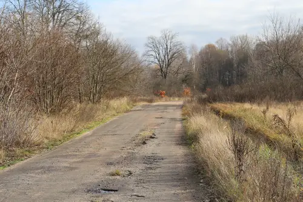
дорога
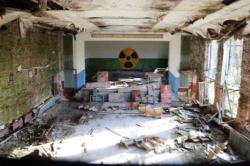
клуб сверху
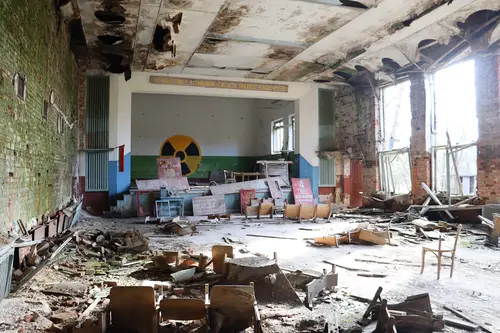
клуб
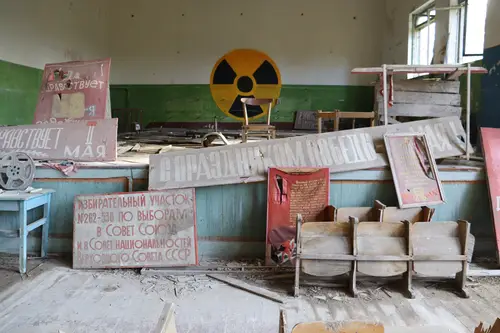
клуб
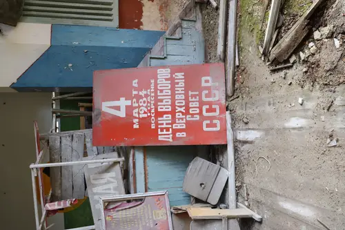
надпись
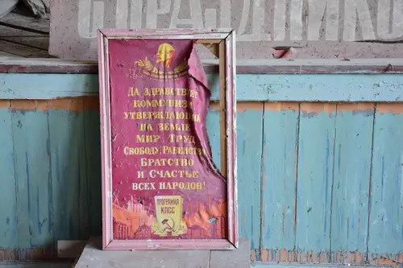
надпись
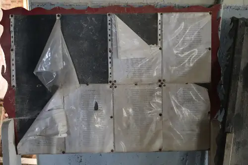
список
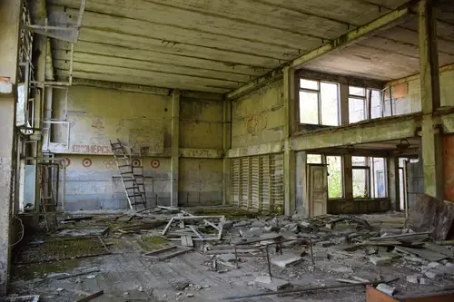
спорт зал
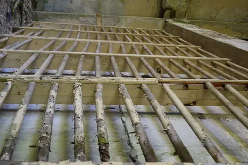
спорт зал

лестница
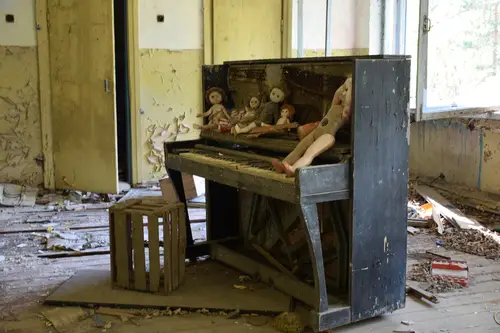
пианино
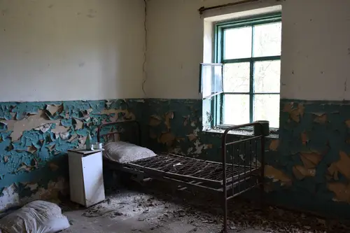
комната
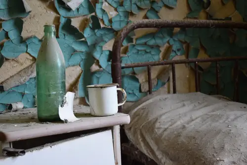
комната
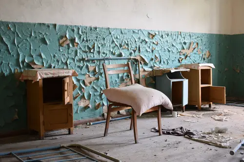
комната
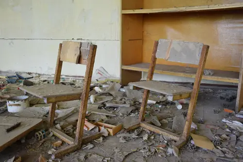
комната
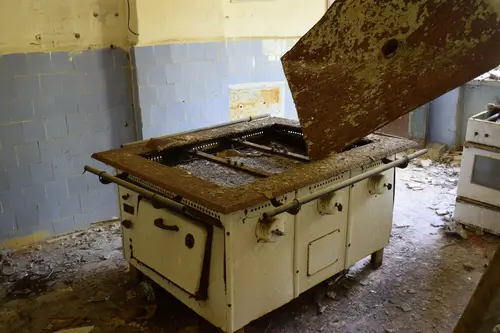
кухня
библиотека

библиотека
библиотека
библиотека
библиотека
игрушка
игрушка
памятник
старый мотоцикл
металлолом
Журнал посетителей

Старая школа (Бабчины)

Смольский Владимир говорит:
воспоминания семьи
Показать / скрыть рассказ
По воспоминаниям моей бабушки, которая родилась в 1929 г. в д. Бабчин Хойникского района и проживала с семьёй до самого отселения до сентября 1986. Она рассказывала, что местный священник Михаил Дроздовский, который служил в д. Бабчин в Крестовоздвиженской церкви с 1878 г. в 1906 г. построил это здание школы. Её ещё называли «Поповская школа». Этому есть ещё очевидное подтверждение, если внимательно присмотреться на лицевую сторону школу, то под крышей мы увидим выложенный их кирпича небольшой четырёхконечный крест. В ней училась до войны моя бабушка.
Церковь находилась на том месте где в д. Бабчин был расположен клуб. Церковь закрыли в 1930-е гг. и переделали её под склад. Бабушкин отец работал в ней кладовщиком. Открою вам ещё одну тайну, если так можно сказать. Да, моя бабушка родилась в 1929 г., как она говорит, её в этой церкви крестили, когда была маленькая ходила вместе с отцом на праздники. Она помнит как выглядела сама церковь, была она кирпичная, большая, а рядом стояла маленькая деревянная. Стояла церковь на том месте, где сейчас стоит клуб.
Возле церкви были ещё похоронены 2 дочки священника, как бабушка говорит «2 поповские дачки». И всегда мне говорила, что был у них батюшка Дроздовский! Ещё как ехать из Бабчина на Воротец, с одной стороны по второй стороне дороги росли вербы, их посадил батюшка, и все говорили, что это поповская дорога, дорога по которой батюшка ездил.
Еще бабушка рассказывала, что ещё её прадед был старостой в Бабчинской церкви. Могу привести этому подтверждение. Отец моей бабушки Кирченко Иван (Иоанн) Степанович, 1894 г.р., будучи ещё мальчишкой по просьбе своего деда (который был старостой церкви) отвозил на телеге батюшку Дроздовского в соседнюю деревню Мокиш. И он его знал, и бабушка моя знали.
Фотографии школы и места
Здесь собраны разные ракурсы и детали здания — листай и открывай каждую фотографию.
вид сбоку
окна
кладка
внутри
интерьер
новая рядом
двери
внутри новой
надпись
территория
детали
хижина
Оревичи
Небольшая остановка на маршруте веб-экскурсии: пройдёмся по истории деревни и посмотрим её сегодня.
Следы древности
Оревичи — деревня в полесских лесах, и её история начинается задолго до письменных времён. Археологи нашли рядом поселения эпохи неолита (в 1 км к юго-западу и в 2 км к западу), что подтверждает заселение этих мест с глубокой древности.
Первые упоминания
В письменных источниках деревня известна с начала XVI века как селение Аревичи в Киевском воеводстве Великого княжества Литовского. В 1570–1580-х Оревичи принадлежали Златоверхому Михайловскому монастырю в Киеве. В 1777 году здесь построили деревянную Рождества-Богородицкую церковь. После раздела Речи Посполитой в 1793 году деревня вошла в состав Российской империи.
Деревня в ХХ веке
С 8 декабря 1926 года Оревичи стали центром сельсовета Хойникского района. В 1931 году в деревне работали начальная школа, отделение кооперации, ветряная мельница, кузница, шерстечесалка и изба-читальня. Тогда же появились колхозы «Коммунар» и «Победа социализма».
Великая Отечественная война
В апреле–мае 1943 года в деревне и окрестных лесах базировался отдельный Путиловский партизанский отряд и штаб соединения С. А. Ковпака. На реке Припять партизаны разгромили немецкую флотилию — на месте событий позже появился памятный знак.
Память о героях
На фронтах и в партизанской борьбе погибли 81 житель Оревичей. В 1970 году возле конторы совхоза установили памятник — скульптуру воина и партизанки. Неподалёку расположена могила врача-связной Веры Михайловны Скирмант и её двух сыновей, расстрелянных в сентябре 1942 года; над могилой стоит обелиск.
После войны и эвакуация
После войны деревня стала центром совхоза «Оревичи»: работали средняя школа, клуб, библиотека, детский сад, больница, аптека, отделение связи и магазины. Но 4 мая 1986 года из-за аварии на Чернобыльской АЭС всех жителей эвакуировали — 557 человек (222 семьи) покинули деревню.